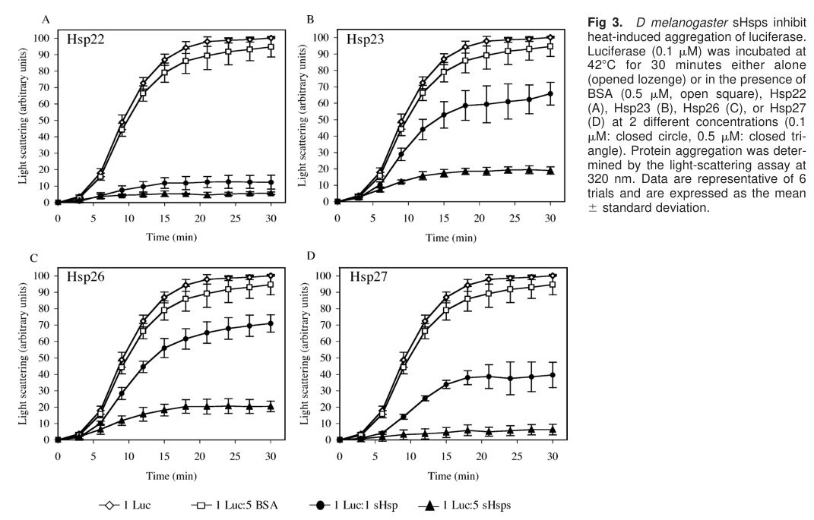

Drosophila melanogaster Heat shock protein 26 (Hsp26) is a small heat shock protein (sHSP) of the HSP20/alpha-crystallin family. It functions primarily as a holdase chaperone, binding denaturing proteins to prevent their aggregation under stress conditions. Unlike ATP-dependent foldases (e.g., HSP70, GroEL), Hsp26 does not actively refold substrates but maintains them in a refoldable state for subsequent processing by HSP70 machinery (PMID:16572729). Hsp26 is one of four classical Drosophila sHSPs (Hsp22, Hsp23, Hsp26, Hsp27) and is highly heat-inducible (PMID:26705243). It forms oligomeric complexes and co-immunoprecipitates with Hsp23 (PMID:32437379). Overexpression extends adult lifespan by approximately 30% (PMID:15308776). Hsp26 also plays a developmental role in synaptogenesis, where it cooperates with Hsp23 to modulate synapse number at the neuromuscular junction (PMID:32437379). Beyond acute heat shock, Hsp26 is developmentally and stress-independently regulated: it is highly expressed in early embryos (4-6 h after egg laying) and enriched in ovaries and testes, with germline expression in nurse cells/oocyte and in male primary spermatocytes, spermatogonia and spermatids (PMID:30400176). Ubiquitous RNAi knockdown of several Drosophila sHsps including Hsp26 causes lethality, indicating an essential developmental role for the sHsp family (PMID:30400176). Hsp26 is predominantly cytosolic with a minor nuclear-matrix pool, and shows distinctive basal regulation (it is an exception to Med15-dependent basal Hsp expression in ovaries; PMID:39353569).
| GO Term | Evidence | Action | Reason |
|---|---|---|---|
|
GO:0005737
cytoplasm
|
IBA
GO_REF:0000033 |
ACCEPT |
Summary: IBA annotation for cytoplasmic localization, supported by phylogenetic inference across multiple sHSP orthologs. Consistent with HDA data (PMID:24292889) and IDA cytosol annotation (PMID:32437379). Drosophila Hsp26 is a cytoplasmic sHSP.
Reason: Cytoplasmic localization is well-supported by multiple lines of evidence including proteomics (HDA, PMID:24292889), direct assay showing cytosol localization (IDA, PMID:32437379), and phylogenetic inference. This is consistent with the known biology of sHSPs as cytoplasmic chaperones. Falcon deep research corroborates this: Hsp26 is reported to be predominantly cytosolic/cytoplasmic with a granular cytosolic staining pattern distinct from Hsp23.
Supporting Evidence:
PMID:32437379
sHSP23 and sHSP26 colocalize in CNS.
file:DROME/Hsp26/Hsp26-deep-research-falcon.md
Hsp26 is reported to be **predominantly cytosolic/cytoplasmic** and displays a **granular cytosolic staining pattern** that differs from the distribution of Hsp23, suggesting sHsp specialization within shared compartments.
|
|
GO:0005634
nucleus
|
IBA
GO_REF:0000033 |
ACCEPT |
Summary: IBA annotation for nuclear localization based on phylogenetic inference from mammalian orthologs (HSPB1, CRYAB, CRYAA, HSPB8) that have documented nuclear localization. No direct experimental evidence for nuclear localization of Drosophila Hsp26 specifically, but mammalian sHSPs do shuttle to the nucleus under stress, making this plausible by homology.
Reason: Nuclear localization is well established for mammalian sHSP orthologs included in the IBA with/from set (HSPB1, CRYAB, CRYAA, HSPB8). The IBA inference is phylogenetically sound. Falcon deep research adds Drosophila-specific support: a minor nuclear fraction of Hsp26 has been detected in the nuclear matrix of embryos and S2 cells (alongside Hsp27), while whole-cell immunostaining indicates it is mainly cytoplasmic. This indicates nuclear association is limited/conditional rather than a primary localization, but is consistent with the IBA inference.
Supporting Evidence:
file:DROME/Hsp26/Hsp26-deep-research-falcon.md
A **minor nuclear fraction** has been detected: Hsp26 was observed in the **nuclear matrix** of embryos and S2 cells (alongside Hsp27), while whole-cell immunostaining indicates it is mainly cytoplasmic, consistent with a model in which nuclear association is limited/conditional.
|
|
GO:0009408
response to heat
|
IBA
GO_REF:0000033 |
ACCEPT |
Summary: IBA annotation for response to heat, well-supported by phylogenetic conservation of heat shock response across sHSPs. Hsp26 is one of four classical Drosophila sHSPs that are highly heat-inducible (PMID:26705243, PMID:16572729).
Reason: Core function. Hsp26 is a classical heat shock protein, highly induced after heat shock at 38 degrees C (PMID:26705243). The name itself reflects this core function. Falcon deep research confirms Hsp26 is a canonical heat shock gene regulated by HSF/HSE logic in the 67B cluster and among the most abundant heat-responsive transcripts in S2 cells.
Supporting Evidence:
PMID:26705243
The four classical small HSPs (HSP22, HSP23, HSP26, and HSP27) were all highly induced after a heat shock
file:DROME/Hsp26/Hsp26-deep-research-falcon.md
Hsp26 is a canonical heat shock gene regulated by HSF/HSE logic in the 67B cluster; it is described as among the most abundant stress-responsive transcripts in Drosophila S2 cells after heat stress, and HSF binding at its promoter is reported in review-level summaries.
PMID:16572729
Heat-induced aggregation of citrate synthase was decreased from 100 to 17 arbitrary units in the presence of Hsp22 and Hsp27 at a 1:1 molar ratio of sHsp to citrate synthase. A 5 M excess of Hsp23 and Hsp26 was required to obtain the same efficiency
|
|
GO:0042026
protein refolding
|
IBA
GO_REF:0000033 |
ACCEPT |
Summary: IBA annotation for protein refolding. While sHSPs do facilitate eventual protein refolding, this is misleading because Hsp26 itself does not refold proteins. Rather, it maintains denatured proteins in a refoldable state for subsequent processing by HSP70 (PMID:16572729, PMID:26705243). The refolding step is performed by the HSP70 machine. However, in the context of cellular assays, overexpression of Hsp26 does increase luciferase refolding because the endogenous HSP70 machinery completes the refolding (PMID:26705243).
Reason: Although Hsp26 does not directly catalyze protein refolding, its holdase activity maintains substrates in a refoldable state, which is a prerequisite for refolding by the HSP70 machine. In cellular assays, Hsp26 overexpression enhances refolding of heat-denatured luciferase (PMID:16572729, PMID:26705243). The GO annotation captures the biological outcome (refolding is achieved) even though the molecular mechanism is indirect (holdase feeding into HSP70-dependent refolding). IBA inference is phylogenetically sound across sHSP family members.
Supporting Evidence:
PMID:16572729
In an in vitro refolding assay with reticulocyte lysate, more than 50% of luciferase activity was recovered when heat denaturation was performed in the presence of Hsp22, 40% with Hsp27, and 30% with Hsp23 or Hsp26.
PMID:26705243
Consistent with in vitro data (Morrow et al., 2006), overexpression of the classical small HSPs (HSP23, HSP26, and HSP27) increased luciferase refolding
|
|
GO:0051082
unfolded protein binding
|
IBA
GO_REF:0000033 |
MODIFY |
Summary: IBA annotation for unfolded protein binding. GO:0051082 is proposed for obsoletion. For sHSPs/holdases, the correct replacement is a holdase chaperone activity NTR (not GO:0140309 which is carrier-specific, and not GO:0044183 which implies active folding). Retain GO:0051082 until the holdase NTR is created.
Reason: GO:0051082 is being obsoleted. Hsp26 functions as a holdase chaperone, binding unfolded proteins to prevent aggregation in situ without actively refolding them. Per UPB project decision rules, sHSPs should be annotated to a holdase chaperone activity NTR (pending creation). GO:0140309 (unfolded protein carrier activity) is not appropriate because it was created for TIM carrier-holdases that transport substrates between compartments. GO:0044183 (protein folding chaperone) is not appropriate because Hsp26 is not a foldase. Retain GO:0051082 until the holdase NTR is created. Falcon deep research independently reaches the same conclusion, describing Drosophila sHSPs including Hsp26 as ATP-independent holdase chaperones that bind misfolded/unfolding proteins to prevent aggregation and keep clients folding-competent for downstream ATP-dependent systems.
Proposed replacements:
unfolded protein binding (retain until holdase NTR is created)
Supporting Evidence:
PMID:16572729
the 4 main sHsps of Drosophila share the ability to prevent heat-induced protein aggregation and are able to maintain proteins in a refoldable state, although with different efficiencies
file:DROME/Hsp26/Hsp26-deep-research-falcon.md
they function primarily as **ATP-independent “holdase” chaperones**: they bind misfolded/unfolding proteins to prevent nonspecific aggregation and keep clients in a folding-competent state for subsequent refolding or processing by ATP-dependent chaperone systems.
|
|
GO:0005737
cytoplasm
|
IEA
GO_REF:0000117 |
ACCEPT |
Summary: IEA (ARBA) annotation for cytoplasmic localization. Consistent with IBA and experimental evidence (HDA PMID:24292889, IDA PMID:32437379).
Reason: Correct and well-supported by multiple experimental sources. Broader than cytosol (IDA) but acceptable as an IEA annotation.
|
|
GO:0009408
response to heat
|
IEA
GO_REF:0000117 |
ACCEPT |
Summary: IEA (ARBA) annotation for response to heat. Consistent with IBA and IDA evidence (PMID:26705243).
Reason: Correct. Hsp26 is a classical heat shock protein that is highly induced upon heat stress. This is its namesake function.
|
|
GO:0042026
protein refolding
|
IEA
GO_REF:0000117 |
ACCEPT |
Summary: IEA (ARBA) annotation for protein refolding. Consistent with IBA and IDA evidence (PMID:26705243, PMID:16572729). Hsp26 participates in the protein refolding process by holding substrates for HSP70-dependent refolding.
Reason: Consistent with the IBA and IDA annotations for the same term. Hsp26 participates in protein refolding by maintaining substrates in a refoldable state, although the actual refolding step is performed by the HSP70 machine.
|
|
GO:0051082
unfolded protein binding
|
IEA
GO_REF:0000117 |
MODIFY |
Summary: IEA (ARBA) annotation for unfolded protein binding. GO:0051082 is being obsoleted. Same considerations as for the IBA and IDA annotations of this term.
Reason: GO:0051082 is being obsoleted. Hsp26 is a holdase chaperone. Retain until holdase NTR is created. See review of IBA annotation for GO:0051082 above for full rationale.
Proposed replacements:
unfolded protein binding (retain until holdase NTR is created)
|
|
GO:0005515
protein binding
|
IPI
PMID:38944040 Next-generation Drosophila protein interactome map and its f... |
MARK AS OVER ANNOTATED |
Summary: IPI annotation for protein binding based on large-scale Drosophila interactome study. The interacting partner is Hsp23 (P02516), as documented in UniProt and IntAct. This interaction is biologically meaningful (sHSPs form homo- and hetero-oligomeric complexes, and Hsp23/Hsp26 co-immunoprecipitate in PMID:32437379), but GO:0005515 (protein binding) is uninformative and does not convey the nature of the interaction.
Reason: GO:0005515 (protein binding) is uninformative as per GO curation guidelines. While the Hsp23-Hsp26 interaction is real and biologically meaningful (co-immunoprecipitation confirmed in PMID:32437379; large-scale interactome in PMID:38944040), the term 'protein binding' does not capture any useful functional information. A more specific term describing sHSP oligomerization or chaperone substrate binding would be preferable.
Supporting Evidence:
PMID:32437379
Both sHSPs immunoprecipitate together and the equilibrium between both chaperones is required for neuronal development and activity.
PMID:38944040
Next-generation Drosophila protein interactome map [IntAct records Hsp26-Hsp23 interaction]
|
|
GO:0006457
protein folding
|
IDA
PMID:16572729 Differences in the chaperone-like activities of the four mai... |
ACCEPT |
Summary: IDA annotation for protein folding based on Morrow et al. (2006). The study showed Hsp26 prevents heat-induced aggregation of citrate synthase and maintains luciferase in a refoldable state. However, Hsp26 itself does not fold proteins; it holds them for HSP70-dependent refolding. This annotation is acceptable as participation in the broader protein folding process.
Reason: The annotation captures Hsp26's role in the protein folding process at the biological process level. While Hsp26 does not directly catalyze folding (it is a holdase), it is an essential participant in the protein folding pathway by maintaining substrates in a folding-competent state. The BP term protein folding encompasses all steps of the process, not just the catalytic step.
Supporting Evidence:
PMID:16572729
the 4 main sHsps of Drosophila share the ability to prevent heat-induced protein aggregation and are able to maintain proteins in a refoldable state, although with different efficiencies
|
|
GO:0044183
protein folding chaperone
|
IDA
PMID:16572729 Differences in the chaperone-like activities of the four mai... |
MODIFY |
Summary: IDA annotation for protein folding chaperone based on Morrow et al. (2006). This MF term implies active protein folding chaperone activity (foldase). However, Hsp26 is a holdase that prevents aggregation and maintains proteins in a refoldable state for HSP70-dependent refolding. It does not actively refold proteins through iterative ATP-dependent binding/release cycles. Per UPB project rules, GO:0044183 is not appropriate for pure holdases.
Reason: GO:0044183 (protein folding chaperone) implies active foldase activity, which is not the mechanism of Hsp26. Morrow et al. (2006) showed that a 5-fold molar excess of Hsp26 was required for aggregation prevention, and refolding depended on reticulocyte lysate (containing HSP70 machinery). Vos et al. (2016) confirmed that sHSP-mediated refolding requires HSP70. Hsp26 is a holdase, not a foldase. The correct annotation should be to a holdase chaperone activity NTR (pending creation). Retain GO:0051082 as interim. Falcon deep research reinforces the holdase (not foldase) characterization: Hsp26 is best described as an ATP-independent chaperone that buffers proteostasis by binding destabilized proteins during stress and facilitating their downstream handling by ATP-driven chaperone/refolding pathways, and required ~5-fold molar excess to match Hsp22/Hsp27 in citrate synthase aggregation assays.
Proposed replacements:
unfolded protein binding (retain until holdase NTR is created)
Supporting Evidence:
PMID:16572729
A 5 M excess of Hsp23 and Hsp26 was required to obtain the same efficiency with either citrate synthase or luciferase as substrate
PMID:26705243
our results strongly suggest that the refolding capacity of D. melanogaster HSP27 and CG14207 is partially dependent on an intact HSP70 machine
file:DROME/Hsp26/Hsp26-deep-research-falcon.md
In functional annotation terms, Hsp26 is best described as an ATP-independent chaperone that buffers proteostasis by binding destabilized proteins during stress and facilitating their downstream handling by ATP-driven chaperone/refolding pathways.
|
|
GO:0005829
cytosol
|
IDA
PMID:32437379 Small heat shock proteins determine synapse number and neuro... |
ACCEPT |
Summary: IDA annotation for cytosol localization based on Santana et al. (2020). The study used an Hsp26-GFP-V5 fusion construct and immunostaining in third instar larval brains and NMJs, showing cytosolic localization particularly enriched in synaptic buttons.
Reason: Well-supported by direct immunofluorescence data. Cytosolic localization is consistent with the broader cytoplasm annotations (IBA, HDA, IEA) and with the known biology of sHSPs as cytoplasmic chaperones. Falcon deep research concurs that Hsp26 is predominantly cytosolic/cytoplasmic with a granular staining pattern distinct from Hsp23.
Supporting Evidence:
PMID:32437379
The confocal images show an accumulation and colocalization of sHSP23 and sHSP26 throughout the NMJ but particularly intense in the synaptic buttons
file:DROME/Hsp26/Hsp26-deep-research-falcon.md
Hsp26 is **predominantly cytosolic/cytoplasmic**, with a **granular cytosolic staining pattern** distinct from Hsp23; a **minor fraction** was also detected in the **nuclear matrix** of embryos and S2 cells.
|
|
GO:0006457
protein folding
|
ISM
PMID:19715580 The small heat shock protein (sHSP) genes in the silkworm, B... |
ACCEPT |
Summary: ISM annotation for protein folding based on Li et al. (2009), a comparative genomic study of sHSP genes across insects. The annotation is based on sequence model inference from the conserved alpha-crystallin domain. The paper itself focuses on genomic organization and evolution of sHSP genes, not direct functional characterization of Drosophila Hsp26.
Reason: The ISM inference is sound: the alpha-crystallin domain is a hallmark of sHSPs with chaperone function. Li et al. (2009) confirmed that insect sHSPs share conserved structural features associated with chaperone function. Hsp26 participation in protein folding is also confirmed by direct experimental evidence (PMID:16572729).
Supporting Evidence:
PMID:19715580
sHSPs primarily have chaperone activity and reflect the response machine of organisms to some extreme stresses existing in environment
|
|
GO:0051082
unfolded protein binding
|
IDA
PMID:16572729 Differences in the chaperone-like activities of the four mai... |
MODIFY |
Summary: IDA annotation for unfolded protein binding based on Morrow et al. (2006). The study directly demonstrated that Hsp26 binds heat-denatured luciferase by sedimentation analysis on sucrose gradients. GO:0051082 is being obsoleted; Hsp26 should be annotated to a holdase NTR when available.
Reason: GO:0051082 is being obsoleted. The experimental evidence directly demonstrates unfolded protein binding: sedimentation analysis showed Hsp26 co-sediments with denatured luciferase at 42 degrees C (PMID:16572729). This binding constitutes holdase chaperone activity. Per UPB project decision rules, the correct replacement for sHSPs is a holdase chaperone activity NTR (pending). Retain GO:0051082 until the holdase NTR is created.
Proposed replacements:
unfolded protein binding (retain until holdase NTR is created)
Supporting Evidence:
PMID:16572729
These differences in luciferase reactivation efficiency seemed related to the ability of sHsps to bind their substrate at 42 degrees C, as revealed by sedimentation analysis of sHsp and luciferase on sucrose gradients
|
|
GO:0051082
unfolded protein binding
|
ISM
PMID:19715580 The small heat shock protein (sHSP) genes in the silkworm, B... |
MODIFY |
Summary: ISM annotation for unfolded protein binding based on sequence model inference from the conserved alpha-crystallin domain in Li et al. (2009). GO:0051082 is being obsoleted.
Reason: GO:0051082 is being obsoleted. The ISM inference is sound (alpha-crystallin domain consistently associated with chaperone/holdase function), but the term needs replacement with holdase NTR when available. Retain GO:0051082 as interim.
Proposed replacements:
unfolded protein binding (retain until holdase NTR is created)
Supporting Evidence:
PMID:19715580
This stable multimeric structure formed by sHSPs has the function of molecular chaperone, which binds to the proteins and prevents them from thermal denaturation
|
|
GO:0009408
response to heat
|
IDA
PMID:26705243 Specific protein homeostatic functions of small heat-shock p... |
ACCEPT |
Summary: IDA annotation for response to heat based on Vos et al. (2016). The study showed that Hsp26 is one of the four classical Drosophila sHSPs that are highly induced after heat shock at 38 degrees C, and its overexpression enhances refolding of heat-denatured substrates and prevents protein aggregation.
Reason: Core function. Heat shock response is a defining characteristic of Hsp26. The study directly measured Hsp26 mRNA induction upon heat shock and characterized its chaperone-like activities in the context of heat stress.
Supporting Evidence:
PMID:26705243
The four classical small HSPs (HSP22, HSP23, HSP26, and HSP27) were all highly induced after a heat shock
|
|
GO:0042026
protein refolding
|
IDA
PMID:26705243 Specific protein homeostatic functions of small heat-shock p... |
ACCEPT |
Summary: IDA annotation for protein refolding based on Vos et al. (2016). The study used a cellular luciferase refolding assay in Drosophila S2 cells and showed that overexpression of Hsp26 increased luciferase refolding after heat shock. However, the refolding depends on the endogenous HSP70 machinery; Hsp26 functions as a holdase to maintain substrates in a refoldable state.
Reason: The annotation captures the biological process outcome correctly. In cellular assays, Hsp26 overexpression does enhance protein refolding (PMID:26705243). The mechanistic nuance (holdase feeding into HSP70-dependent refolding) does not invalidate the BP annotation for protein refolding, as Hsp26 is an essential participant in this process.
Supporting Evidence:
PMID:26705243
overexpression of the classical small HSPs (HSP23, HSP26, and HSP27) increased luciferase refolding
|
|
GO:0005737
cytoplasm
|
HDA
PMID:24292889 Ube3a, the E3 ubiquitin ligase causing Angelman syndrome and... |
ACCEPT |
Summary: HDA annotation for cytoplasmic localization based on Lee et al. (2014). This study focused on Ube3a and protein homeostasis, and Hsp26 was identified in the cytoplasmic proteome by high-throughput methods. While Hsp26 is not a focus of this paper, the detection of Hsp26 in cytoplasmic fractions is consistent with its known localization.
Reason: Consistent with all other localization data. Hsp26 is a cytoplasmic sHSP. The HDA evidence provides independent proteomics confirmation.
Supporting Evidence:
PMID:24292889
We have now devised a protocol to screen for substrates of this particular ubiquitin ligase. In a neuronal cell system, we find direct ubiquitination by Ube3a of three proteasome-related proteins Rpn10, Uch-L5, and CG8209, as well as of the ribosomal protein Rps10b.
|
|
GO:0017022
myosin binding
|
IPI
PMID:18045836 Sisyphus, the Drosophila myosin XV homolog, traffics within ... |
KEEP AS NON CORE |
Summary: IPI annotation for myosin binding based on Liu et al. (2008). The study focused on Sisyphus (Drosophila myosin XV homolog) and identified Hsp26 as a putative cargo transported within filopodia. The paper identified several putative Sisyphus cargos including DE-cadherin, Katanin-60, EB1, Milton, and aPKC, but Hsp26 is not mentioned in the abstract as a primary cargo. This appears to be an incidental interaction rather than a core function of Hsp26.
Reason: The interaction with Sisyphus (myosin XV) was identified in a study focused on myosin cargo identification, not on Hsp26 function. While the physical interaction may be real, myosin binding does not represent a core function of Hsp26 as a holdase chaperone. It may reflect Hsp26 being transported as cargo or an incidental interaction in the cytoplasm. Falcon deep research likewise frames Hsp26-myosin interaction as a review-level, non-core observation suggesting a possible role in filopodial/cytoskeletal dynamics, supporting the KEEP_AS_NON_CORE action.
Supporting Evidence:
PMID:18045836
We have identified several putative Sisyphus cargos, including DE-cadherin (also known as Shotgun) and the microtubule-linked proteins Katanin-60, EB1, Milton and aPKC
file:DROME/Hsp26/Hsp26-deep-research-falcon.md
Reported interactions include **myosin 10A** (suggesting roles in **filopodial/cytoskeletal dynamics**) and a two-hybrid interaction with **lawc**, a factor linked to the **nuclear proteasome regulator dREGγ**; possible association with **DmUbc9** has been proposed.
|
|
GO:0009631
cold acclimation
|
IEP
PMID:16313561 Cold hardening and transcriptional change in Drosophila mela... |
KEEP AS NON CORE |
Summary: IEP annotation for cold acclimation based on Qin et al. (2005). The study used microarray analysis to examine transcriptional changes during cold hardening (0 degrees C for 2 h) and found Hsp26 among genes with increased transcript abundance. The evidence is expression-based (IEP) and suggests Hsp26 participates in the cold hardening response, but does not demonstrate a direct functional role.
Reason: The evidence is only expression-based (IEP). Cold acclimation is not a core function of Hsp26 but rather reflects the broader stress response role of sHSPs. The transcriptional induction during cold hardening is plausible given that protein misfolding can occur during cold stress, but this is a secondary/pleiotropic function. Falcon deep research independently notes that Hsp26 is reported as cold-inducible in review-level summaries, consistent with retaining this as a non-core stress-response role.
Supporting Evidence:
PMID:16313561
these assays suggest that stress proteins, including Hsp23, Hsp26, Hsp83 and Frost as well as membrane-associated proteins may contribute to the cold hardening response
file:DROME/Hsp26/Hsp26-deep-research-falcon.md
Hsp26 is also reported as **cold-inducible** in review-level summaries.
|
|
GO:0008340
determination of adult lifespan
|
IMP
PMID:15308776 Multiple-stress analysis for isolation of Drosophila longevi... |
KEEP AS NON CORE |
Summary: IMP annotation for determination of adult lifespan based on Wang et al. (2004). The study showed that overexpression of Hsp26 using the UAS/GAL4 system extended mean lifespan by 30% in Drosophila and increased stress resistance. This is a real biological phenotype but likely reflects the downstream consequence of improved protein homeostasis rather than a core molecular function.
Reason: The lifespan extension phenotype is well-supported by IMP evidence. However, determination of adult lifespan is a downstream consequence of the core holdase chaperone function maintaining protein homeostasis during aging, not a direct molecular activity. Vos et al. (2016) showed that diverse sHSP activities (both refolding-promoting and anti-aggregation) can support longevity, indicating the lifespan effect is a pleiotropic outcome of improved proteostasis. Falcon deep research corroborates this as a pleiotropic/downstream readout: it notes Hsp26 overexpression can increase lifespan and oxidative-stress resistance, but its direct thermoprotective effect in larvae appears small, supporting KEEP_AS_NON_CORE.
Supporting Evidence:
PMID:15308776
Overexpression of either hsp26 or hsp27 extended the mean lifespan by 30%, and the flies also displayed increased stress resistance
PMID:26705243
overexpression of both CG14207 and HSP67BC in Drosophila leads to a mild increase in lifespan, demonstrating that increased levels of functionally diverse small HSPs can promote longevity in vivo
file:DROME/Hsp26/Hsp26-deep-research-falcon.md
Overexpression studies summarized in reviews report that Hsp26 can **increase lifespan** and **oxidative-stress resistance**; however, its direct thermoprotective effect in larvae appears **small** and it had **no effect on neural function** in one summarized assay.
|
The research report should be a detailed narrative explaining the function, biological processes, and localization of the gene product. Citations should be given for all claims.
You should prioritize authoritative reviews and primary scientific literature when conducting research. You can supplement
this with annotations you find in gene/protein databases, but these can be outdated or inaccurate.
We are specifically interested in the primary function of the gene - for enzymes, what reaction is catalyzed, and what is the substrate specificity? For transporters, what is the substrate? For structural proteins or adapters, what is the broader structural role? For signaling molecules, what is the role in the pathway.
We are interested in where in or outside the cell the gene product carries out its function.
We are also interested in the signaling or biochemical pathways in which the gene functions. We are less interested in broad pleiotropic effects, except where these elucidate the precise role.
Include evidence where possible. We are interested in both experimental evidence as well as inference from structure, evolution, or bioinformatic analysis. Precise studies should be prioritized over high-throughput, where available.
The research target is the Drosophila melanogaster small heat shock protein Hsp26, encoded by CG4183 and annotated in UniProt as P02517. This protein is one of the canonical Drosophila small heat shock proteins (sHsps) and belongs to the α‑crystallin/HSP20 family; it is part of the well-known sHsp gene cluster at cytological locus 67B. Evidence explicitly mapping Hsp26 to UniProt P02517 and to the Drosophila sHsp cluster is provided in Drosophila-focused reviews and experimental studies. (morrow2015drosophilasmallheat pages 1-3, jagla2018developmentalexpressionand pages 1-3, morrow2006differencesinthe pages 1-3)
Small heat shock proteins are a ubiquitous class of molecular chaperones defined by a conserved α‑crystallin domain (ACD; ~80 aa) flanked by more variable N‑ and C‑terminal regions. They typically assemble as dimers (ACD-mediated) that serve as building blocks for dynamic oligomers, and they function primarily as ATP-independent “holdase” chaperones: they bind misfolded/unfolding proteins to prevent nonspecific aggregation and keep clients in a folding-competent state for subsequent refolding or processing by ATP-dependent chaperone systems. (morrow2015drosophilasmallheat pages 1-3, jagla2018developmentalexpressionand pages 1-3)
Drosophila sHsps additionally exhibit extensive developmental regulation and tissue specificity, indicating roles beyond acute heat shock, including proteostasis support during development and in specialized tissues (e.g., germline). (jagla2018developmentalexpressionand pages 1-3, jagla2018developmentalexpressionand pages 3-6)
Drosophila melanogaster encodes 12 sHsp genes; eight (including Hsp26) are tightly clustered within ~12 kb at locus 67B. This clustering correlates with shared and specialized regulatory architectures enabling rapid stress-inducible transcription while also permitting tissue-/development-specific expression. (jagla2018developmentalexpressionand pages 1-3, morrow2015drosophilasmallheat pages 1-3)
Mechanistically, regulation integrates canonical HSF/HSE heat-shock transcriptional control with chromatin accessibility features (e.g., GA repeats associated with GAGA factor binding/open chromatin and polymerase pausing) and proposed DNA looping involving HSEs positioned around nucleosomes to facilitate cooperative HSF action. (jagla2018developmentalexpressionand pages 1-3)
The most direct experimental characterization of Drosophila Hsp26’s molecular function is biochemical: Hsp26 suppresses heat-induced aggregation of model substrates and preserves refoldability of denatured proteins.
In comparative in vitro assays (Hsp22, Hsp23, Hsp26, Hsp27), Hsp26 inhibited heat-induced aggregation of citrate synthase and firefly luciferase, but was less efficient than Hsp22/Hsp27. Hsp26 required approximately a 5-fold molar excess to reach suppression levels achieved by Hsp22/Hsp27 near 1:1 ratios in citrate synthase aggregation assays. (morrow2006differencesinthe pages 1-3, morrow2006differencesinthe media b2b8460d)
In a luciferase refolding paradigm (heat denaturation at 42°C followed by recovery in reticulocyte lysate + ATP), luciferase activity recovery after denaturation in the presence of Hsp26 was 35.7% ± 3.5%, compared with 54.9% ± 2.8% (Hsp22) and 42.8% ± 3.3% (Hsp27). These results support the canonical sHsp “holdase” model in which Hsp26 maintains substrates in a refolding-competent state for ATP-dependent systems, but with substrate-binding/hand-off properties distinct from other Drosophila sHsps. (morrow2006differencesinthe pages 6-8)
Figure evidence: The comparative aggregation inhibition data (Hsp26 vs other sHsps) are shown in the cropped Figure 2/3 panels retrieved from the source paper. (morrow2006differencesinthe media b2b8460d, morrow2006differencesinthe media c3df5a3b)
Interpretation: In functional annotation terms, Hsp26 is best described as an ATP-independent chaperone that buffers proteostasis by binding destabilized proteins during stress and facilitating their downstream handling by ATP-driven chaperone/refolding pathways. (jagla2018developmentalexpressionand pages 1-3, morrow2006differencesinthe pages 6-8)
Hsp26 is reported to be predominantly cytosolic/cytoplasmic and displays a granular cytosolic staining pattern that differs from the distribution of Hsp23, suggesting sHsp specialization within shared compartments. (morrow2006differencesinthe pages 1-3, morrow2006differencesinthe pages 3-4)
A minor nuclear fraction has been detected: Hsp26 was observed in the nuclear matrix of embryos and S2 cells (alongside Hsp27), while whole-cell immunostaining indicates it is mainly cytoplasmic, consistent with a model in which nuclear association is limited/conditional. (morrow2015drosophilasmallheat pages 3-5)
Hsp26 exists as multiple molecular forms: reports summarize the presence of five isoforms, and note that three serines can be phosphorylated and that ubiquitination of Hsp26 has been observed in fly neurons. These modifications are consistent with broader sHsp regulation paradigms (oligomer dynamics, localization, and client handling), although specific mechanistic consequences for Hsp26 remain incompletely resolved. (morrow2015drosophilasmallheat pages 3-5, morrow2015drosophilasmallheat pages 5-8)
Hsp26 is not only stress inducible but is also strongly regulated during development. It is described as highly expressed in early embryos (4–6 h after egg laying), and enriched in ovaries and testes. (jagla2018developmentalexpressionand pages 1-3)
More specifically in the germline, Hsp26 mRNA is present in nurse cells and later in the oocyte, and in males Hsp26 is expressed in germline cell types including primary spermatocytes, some spermatogonia, and spermatids, reflecting specialized regulatory elements for spermatocyte expression. (jagla2018developmentalexpressionand pages 3-6)
Genetic evidence suggests essential roles in development at the family level: ubiquitous RNAi knockdown of multiple sHsps including Hsp26 caused lethality, supporting that sHsps (including Hsp26) contribute indispensably to proteostasis and tissue robustness during development. (jagla2018developmentalexpressionand pages 1-3)
Hsp26 is a canonical heat shock gene regulated by HSF/HSE logic in the 67B cluster; it is described as among the most abundant stress-responsive transcripts in Drosophila S2 cells after heat stress, and HSF binding at its promoter is reported in review-level summaries. (dabbaghizadeh2018structureandfunction pages 51-55, jagla2018developmentalexpressionand pages 1-3)
A 2024 study in Open Biology investigated nuclear functions of Moesin and the Mediator subunit Med15, showing that Med15 knockdown in ovaries reduced basal expression of several Hsp genes; however, Hsp26 (and Hsp70Ba) were explicit exceptions and did not show the basal reduction observed for other Hsp genes under those conditions. The authors place this within an HSF–Med15–Moesin nuclear interaction framework regulating Hsp gene expression. (kristo2024moesincontributesto pages 7-8, kristo2024moesincontributesto pages 8-9)
Functional implication: This suggests that within the Hsp gene set, Hsp26 may have distinct promoter architecture, compensatory regulation, or tissue-specific control that makes it less dependent on Med15 for basal expression in ovaries—an important nuance for pathway annotation of Hsp26 regulation. (kristo2024moesincontributesto pages 8-9)
Citation details: Kristó et al., Open Biology, Oct 2024, https://doi.org/10.1098/rsob.240110 (kristo2024moesincontributesto pages 7-8)
A 2024 Biology (MDPI) study evaluated polyethylene terephthalate microplastic exposure in Drosophila, and assayed stress genes including hsp26 in third-instar larval gut after 48 h exposure at 10, 20, and 40 g/L PET microplastics using RT-PCR. The available extracted text contains the assay design but did not include the numeric hsp26 result values (fold-changes/statistics), so quantitative conclusions about hsp26 induction from this study cannot be asserted here. (kauts2024impactofpolyethylene pages 4-5)
Citation details: Kauts et al., Biology, Apr 2024, https://doi.org/10.3390/biology13050293 (kauts2024impactofpolyethylene pages 4-5)
A 2024 review in International Journal of Molecular Sciences summarizes conserved heat shock response concepts and notes the canonical Drosophila sHsps (Hsp22/23/26/27) as an intracellular, developmentally regulated set clustered at 67B, consistent with earlier Drosophila-focused literature. This source is useful for framing but does not add Hsp26-specific mechanistic data. (singh2024heatshockresponse pages 15-16)
Citation details: Singh et al., IJMS, Apr 2024, https://doi.org/10.3390/ijms25084209 (singh2024heatshockresponse pages 15-16)
Hsp26 is used in comparative chaperone biochemistry to dissect sHsp specialization (substrate preferences, binding/hand-off efficiency). The quantitative differences in aggregation suppression and luciferase refolding efficiency across Hsp22/23/26/27 provide an implementation pathway for using Hsp26 in mechanistic proteostasis studies and for benchmarking engineered or mutant sHsps. (morrow2006differencesinthe pages 6-8, morrow2006differencesinthe pages 1-3, morrow2006differencesinthe media b2b8460d)
In 2024, Hsp26 was included among the Hsp genes surveyed to test Mediator-dependent basal heat shock gene expression programs, demonstrating its use as a readout gene in nuclear actin/Mediator/HSF regulatory studies. (kristo2024moesincontributesto pages 7-8, kristo2024moesincontributesto pages 8-9)
Hsp26 is employed as one of the stress-gene readouts in environmental exposure experiments in Drosophila (e.g., PET microplastics). More broadly, reviews cite work using hsp26 transcriptional changes as part of toxicant response panels (e.g., aromatic hydrocarbons), though numeric effect sizes are not present in the accessible excerpt. (kauts2024impactofpolyethylene pages 4-5, morrow2015drosophilasmallheat pages 27-28)
Drosophila-focused reviews emphasize that sHsps—including Hsp26—should be annotated not only as heat-inducible chaperones but also as developmentally deployed proteostasis factors with strong tissue specificity, particularly in germline and nervous system. This framing argues against a simplistic “stress-only” functional label and supports a dual annotation: (i) general proteostasis/stress buffering and (ii) developmental robustness in specialized tissues. (jagla2018developmentalexpressionand pages 1-3, jagla2018developmentalexpressionand pages 3-6)
Reviews further highlight that sHsps have diverse intracellular localizations in Drosophila; Hsp26’s mostly cytosolic distribution with a minor nuclear matrix pool suggests it could participate in both cytosolic protein quality control and conditional nuclear proteostasis/transcriptional environments, consistent with the observation of nuclear interactors in two-hybrid screens summarized in Drosophila sHsp reviews. (morrow2015drosophilasmallheat pages 3-5, morrow2015drosophilasmallheat pages 18-20)
Biochemical chaperone function (primary quantitative dataset):
- Luciferase refolding recovery (mean ± SD): 35.7% ± 3.5% for Hsp26; 54.9% ± 2.8% for Hsp22; 42.8% ± 3.3% for Hsp27; 30.7% ± 6.7% for Hsp23 (assay: 42°C denaturation, recovery in reticulocyte lysate + ATP). (morrow2006differencesinthe pages 6-8)
- Citrate synthase aggregation inhibition: Hsp26 required ~5× molar excess to achieve suppression comparable to Hsp22/Hsp27 at ~1:1; Hsp22/Hsp27 reduced aggregation from 100 to 17 arbitrary units at 1:1 in the excerpted summary. (morrow2006differencesinthe pages 1-3)
Regulatory network perturbation (partial quantitative dataset):
- Med15 RNAi in ovaries reduced Med15 transcript by ~70% (qPCR), and most surveyed Hsp genes decreased basally except Hsp26, which did not show that reduction in the excerpted results. Hsp26-specific fold-change was not provided in the excerpt. (kristo2024moesincontributesto pages 7-8)
Toxicology biomarker study design (quantitative exposure context, but missing gene-result values):
- PET microplastics exposure: 10/20/40 g/L for 48 h in larval gut, with RT-PCR targeting hsp26 among stress genes; hsp26 quantitative outcomes were not present in the retrieved excerpt. (kauts2024impactofpolyethylene pages 4-5)
Despite strong evidence that Hsp26 is an ATP-independent holdase chaperone with defined subcellular distribution and robust developmental/stress regulation, available evidence in the retrieved texts is limited for:
- Identification of endogenous client proteins (beyond reported interactions) and their functional consequences. (morrow2015drosophilasmallheat pages 18-20, morrow2015drosophilasmallheat pages 5-8)
- Quantitative 2023–2024 Hsp26-specific expression fold-changes across stresses/toxicants and in vivo phenotypic effect sizes (e.g., lifespan % changes), which are referenced in reviews but not numerically present in the accessible excerpts. (morrow2015drosophilasmallheat pages 27-28, morrow2015drosophilasmallheat pages 5-8)
Hsp26 (CG4183; UniProt P02517) is a predominantly cytosolic small heat shock protein with an α‑crystallin domain that functions as an ATP-independent holdase chaperone, suppressing heat-induced protein aggregation and maintaining denatured substrates in a refolding-competent state; it is also developmentally regulated, with high expression in early embryos and germline tissues, and exhibits multiple isoforms and stress-associated PTMs (phosphorylation/ubiquitination). (jagla2018developmentalexpressionand pages 1-3, morrow2006differencesinthe pages 6-8, morrow2015drosophilasmallheat pages 3-5, jagla2018developmentalexpressionand pages 3-6)
| Category | Key findings | Evidence type | Key citation (paper + year + URL) | PaperQA citation id |
|---|---|---|---|---|
| identity | Verified target is Drosophila melanogaster Hsp26 = CG4183, UniProt P02517; one of the canonical Drosophila small heat shock proteins (sHsps), in the HSP20/α-crystallin family, clustered with other sHsp genes at 67B on chromosome 3L. | review/database synthesis | Morrow & Tanguay 2015 — https://doi.org/10.1007/978-3-319-16077-1_25; Jagla et al. 2018 — https://doi.org/10.3390/ijms19113441 | (morrow2015drosophilasmallheat pages 1-3, jagla2018developmentalexpressionand pages 1-3) |
| domains | Hsp26 contains the conserved α-crystallin domain (ACD) typical of sHsps; Drosophila sHsps are ATP-independent holdase chaperones, and most fly sHsps including Hsp26 also carry an N-terminal WDPF motif implicated in client binding. | review | Jagla et al. 2018 — https://doi.org/10.3390/ijms19113441; Morrow & Tanguay 2015 — https://doi.org/10.1007/978-3-319-16077-1_25 | (jagla2018developmentalexpressionand pages 1-3, morrow2015drosophilasmallheat pages 1-3) |
| localization | Hsp26 is predominantly cytosolic/cytoplasmic, with a granular cytosolic staining pattern distinct from Hsp23; a minor fraction was also detected in the nuclear matrix of embryos and S2 cells. | cell biology/review | Morrow et al. 2006 — https://doi.org/10.1379/csc-166.1; Morrow & Tanguay 2015 — https://doi.org/10.1007/978-3-319-16077-1_25 | (morrow2006differencesinthe pages 1-3, morrow2006differencesinthe pages 3-4, morrow2015drosophilasmallheat pages 3-5) |
| PTMs/isoforms | Hsp26 exists in five isoforms; three serines can be phosphorylated; ubiquitination has been observed in fly neurons. PTMs may affect localization/function, but specific mechanistic consequences for Hsp26 remain unresolved. | biochemical/review | Morrow & Tanguay 2015 — https://doi.org/10.1007/978-3-319-16077-1_25 | (morrow2015drosophilasmallheat pages 3-5, morrow2015drosophilasmallheat pages 5-8) |
| chaperone assays | In vitro, Hsp26 inhibits heat-induced aggregation of citrate synthase (CS) and luciferase, but is generally less effective than Hsp22 and Hsp27. Hsp26 needed about a 5-fold molar excess to match inhibition achieved by Hsp22/Hsp27 at ~1:1 ratio in CS assays; in luciferase refolding assays, activity recovery was 35.7% ± 3.5% for Hsp26 versus 54.9% ± 2.8% for Hsp22 and 42.8% ± 3.3% for Hsp27. | biochemical | Morrow et al. 2006 — https://doi.org/10.1379/csc-166.1 | (morrow2006differencesinthe pages 6-8, morrow2006differencesinthe pages 1-3, morrow2006differencesinthe media b2b8460d) |
| developmental expression | Hsp26 shows strong developmental regulation: highly expressed in early embryos (4–6 h AEL), ovaries, and testis; expressed in brain and gonads early in development; in oogenesis its mRNA is present in nurse cells and later the oocyte; in males it is detected in primary spermatocytes, some spermatogonia, and spermatids. | genetics/developmental biology/review | Jagla et al. 2018 — https://doi.org/10.3390/ijms19113441; Dabbaghizadeh 2018 (secondary source) | (jagla2018developmentalexpressionand pages 1-3, jagla2018developmentalexpressionand pages 3-6, dabbaghizadeh2018structureandfunction pages 51-55) |
| stress regulation | Hsp26 is a classic heat-inducible sHsp and among the most abundant heat-responsive transcripts in S2 cells; its promoter is bound by HSF after heat stress. Expression control integrates HSE/HSF, GAGA-factor/open chromatin, and DNA-looping mechanisms. Hsp26 is also reported as cold-inducible in review-level summaries. | molecular genetics/review | Jagla et al. 2018 — https://doi.org/10.3390/ijms19113441; Dabbaghizadeh 2018 (secondary source) | (jagla2018developmentalexpressionand pages 1-3, dabbaghizadeh2018structureandfunction pages 51-55, dabbaghizadeh2018structureandfunction pages 55-58) |
| interactions/clients | Direct physiological client repertoire remains incompletely defined. Reported interactions include myosin 10A (suggesting roles in filopodial/cytoskeletal dynamics) and a two-hybrid interaction with lawc, a factor linked to the nuclear proteasome regulator dREGγ; possible association with DmUbc9 has been proposed. | cell biology/genetics/review | Morrow & Tanguay 2015 — https://doi.org/10.1007/978-3-319-16077-1_25 | (morrow2015drosophilasmallheat pages 5-8, morrow2015drosophilasmallheat pages 18-20) |
| phenotypes/applications | Overexpression studies summarized in reviews report that Hsp26 can increase lifespan and oxidative-stress resistance; however, its direct thermoprotective effect in larvae appears small and it had no effect on neural function in one summarized assay. Hsp26 is also used as a stress-response biomarker in Drosophila toxicology/stress biology studies. | genetics/application/review | Morrow & Tanguay 2015 — https://doi.org/10.1007/978-3-319-16077-1_25; Kauts et al. 2024 — https://doi.org/10.3390/biology13050293 | (morrow2015drosophilasmallheat pages 5-8, kauts2024impactofpolyethylene pages 4-5) |
| notes/limitations | Evidence for Hsp26 is substantial for family membership, localization, stress/developmental expression, and in vitro holdase activity, but still limited for bona fide endogenous clients, pathway-specific mechanisms, and quantitative 2023–2024 Hsp26-specific functional studies. The 2024 PET-microplastics paper assayed hsp26 by RT-PCR in larval gut after 48 h at 10/20/40 g/L, but the extracted text did not provide numeric hsp26 results. | evidence appraisal | Kauts et al. 2024 — https://doi.org/10.3390/biology13050293; Morrow et al. 2006 — https://doi.org/10.1379/csc-166.1 | (kauts2024impactofpolyethylene pages 4-5, morrow2006differencesinthe pages 6-8) |
Table: This table summarizes the experimentally supported properties of Drosophila melanogaster Hsp26 (P02517/CG4183), including localization, chaperone activity, regulation, and known limitations of the evidence base. It is useful as a compact reference for functional annotation grounded in primary and review literature.
References
(morrow2015drosophilasmallheat pages 1-3): Geneviève Morrow and Robert M. Tanguay. Drosophila small heat shock proteins: an update on their features and functions. ArXiv, pages 579-606, Jan 2015. URL: https://doi.org/10.1007/978-3-319-16077-1_25, doi:10.1007/978-3-319-16077-1_25. This article has 37 citations.
(jagla2018developmentalexpressionand pages 1-3): Teresa Jagla, Magda Dubińska-Magiera, Preethi Poovathumkadavil, Małgorzata Daczewska, and Krzysztof Jagla. Developmental expression and functions of the small heat shock proteins in drosophila. International Journal of Molecular Sciences, 19:3441, Nov 2018. URL: https://doi.org/10.3390/ijms19113441, doi:10.3390/ijms19113441. This article has 54 citations.
(morrow2006differencesinthe pages 1-3): Geneviève Morrow, John J. Heikkila, and Robert M. Tanguay. Differences in the chaperone-like activities of the four main small heat shock proteins of drosophila melanogaster. Cell Stress & Chaperones, 11:51-60, Jan 2006. URL: https://doi.org/10.1379/csc-166.1, doi:10.1379/csc-166.1. This article has 123 citations and is from a peer-reviewed journal.
(jagla2018developmentalexpressionand pages 3-6): Teresa Jagla, Magda Dubińska-Magiera, Preethi Poovathumkadavil, Małgorzata Daczewska, and Krzysztof Jagla. Developmental expression and functions of the small heat shock proteins in drosophila. International Journal of Molecular Sciences, 19:3441, Nov 2018. URL: https://doi.org/10.3390/ijms19113441, doi:10.3390/ijms19113441. This article has 54 citations.
(morrow2006differencesinthe media b2b8460d): Geneviève Morrow, John J. Heikkila, and Robert M. Tanguay. Differences in the chaperone-like activities of the four main small heat shock proteins of drosophila melanogaster. Cell Stress & Chaperones, 11:51-60, Jan 2006. URL: https://doi.org/10.1379/csc-166.1, doi:10.1379/csc-166.1. This article has 123 citations and is from a peer-reviewed journal.
(morrow2006differencesinthe pages 6-8): Geneviève Morrow, John J. Heikkila, and Robert M. Tanguay. Differences in the chaperone-like activities of the four main small heat shock proteins of drosophila melanogaster. Cell Stress & Chaperones, 11:51-60, Jan 2006. URL: https://doi.org/10.1379/csc-166.1, doi:10.1379/csc-166.1. This article has 123 citations and is from a peer-reviewed journal.
(morrow2006differencesinthe media c3df5a3b): Geneviève Morrow, John J. Heikkila, and Robert M. Tanguay. Differences in the chaperone-like activities of the four main small heat shock proteins of drosophila melanogaster. Cell Stress & Chaperones, 11:51-60, Jan 2006. URL: https://doi.org/10.1379/csc-166.1, doi:10.1379/csc-166.1. This article has 123 citations and is from a peer-reviewed journal.
(morrow2006differencesinthe pages 3-4): Geneviève Morrow, John J. Heikkila, and Robert M. Tanguay. Differences in the chaperone-like activities of the four main small heat shock proteins of drosophila melanogaster. Cell Stress & Chaperones, 11:51-60, Jan 2006. URL: https://doi.org/10.1379/csc-166.1, doi:10.1379/csc-166.1. This article has 123 citations and is from a peer-reviewed journal.
(morrow2015drosophilasmallheat pages 3-5): Geneviève Morrow and Robert M. Tanguay. Drosophila small heat shock proteins: an update on their features and functions. ArXiv, pages 579-606, Jan 2015. URL: https://doi.org/10.1007/978-3-319-16077-1_25, doi:10.1007/978-3-319-16077-1_25. This article has 37 citations.
(morrow2015drosophilasmallheat pages 5-8): Geneviève Morrow and Robert M. Tanguay. Drosophila small heat shock proteins: an update on their features and functions. ArXiv, pages 579-606, Jan 2015. URL: https://doi.org/10.1007/978-3-319-16077-1_25, doi:10.1007/978-3-319-16077-1_25. This article has 37 citations.
(dabbaghizadeh2018structureandfunction pages 51-55): A Dabbaghizadeh. Structure and function of mitochondrial small heat shock protein 22 in drosophila melanogaster. Unknown journal, 2018.
(kristo2024moesincontributesto pages 7-8): Ildikó Kristó, Zoltán Kovács, Anikó Szabó, Péter Borkúti, Alexandra Gráf, Ádám Tamás Sánta, Aladár Pettkó-Szandtner, Edit Ábrahám, Viktor Honti, Zoltán Lipinszki, and Péter Vilmos. Moesin contributes to heat shock gene response through direct binding to the med15 subunit of the mediator complex in the nucleus. Open Biology, Oct 2024. URL: https://doi.org/10.1098/rsob.240110, doi:10.1098/rsob.240110. This article has 1 citations and is from a peer-reviewed journal.
(kristo2024moesincontributesto pages 8-9): Ildikó Kristó, Zoltán Kovács, Anikó Szabó, Péter Borkúti, Alexandra Gráf, Ádám Tamás Sánta, Aladár Pettkó-Szandtner, Edit Ábrahám, Viktor Honti, Zoltán Lipinszki, and Péter Vilmos. Moesin contributes to heat shock gene response through direct binding to the med15 subunit of the mediator complex in the nucleus. Open Biology, Oct 2024. URL: https://doi.org/10.1098/rsob.240110, doi:10.1098/rsob.240110. This article has 1 citations and is from a peer-reviewed journal.
(kauts2024impactofpolyethylene pages 4-5): Simran Kauts, Yachana Mishra, and Mahendra P. Singh. Impact of polyethylene terephthalate microplastics on drosophila melanogaster biological profiles and heat shock protein levels. Biology, 13:293, Apr 2024. URL: https://doi.org/10.3390/biology13050293, doi:10.3390/biology13050293. This article has 20 citations.
(singh2024heatshockresponse pages 15-16): Manish Kumar Singh, Yoonhwa Shin, Songhyun Ju, Sunhee Han, Wonchae Choe, Kyung-Sik Yoon, Sung Soo Kim, and Insug Kang. Heat shock response and heat shock proteins: current understanding and future opportunities in human diseases. International Journal of Molecular Sciences, 25:4209, Apr 2024. URL: https://doi.org/10.3390/ijms25084209, doi:10.3390/ijms25084209. This article has 212 citations.
(morrow2015drosophilasmallheat pages 27-28): Geneviève Morrow and Robert M. Tanguay. Drosophila small heat shock proteins: an update on their features and functions. ArXiv, pages 579-606, Jan 2015. URL: https://doi.org/10.1007/978-3-319-16077-1_25, doi:10.1007/978-3-319-16077-1_25. This article has 37 citations.
(morrow2015drosophilasmallheat pages 18-20): Geneviève Morrow and Robert M. Tanguay. Drosophila small heat shock proteins: an update on their features and functions. ArXiv, pages 579-606, Jan 2015. URL: https://doi.org/10.1007/978-3-319-16077-1_25, doi:10.1007/978-3-319-16077-1_25. This article has 37 citations.
(dabbaghizadeh2018structureandfunction pages 55-58): A Dabbaghizadeh. Structure and function of mitochondrial small heat shock protein 22 in drosophila melanogaster. Unknown journal, 2018.

id: P02517
gene_symbol: Hsp26
product_type: PROTEIN
status: DRAFT
taxon:
id: NCBITaxon:7227
label: Drosophila melanogaster
description: >-
Drosophila melanogaster Heat shock protein 26 (Hsp26) is a small heat shock protein
(sHSP) of the
HSP20/alpha-crystallin family. It functions primarily as a holdase chaperone, binding
denaturing
proteins to prevent their aggregation under stress conditions. Unlike ATP-dependent
foldases
(e.g., HSP70, GroEL), Hsp26 does not actively refold substrates but maintains them
in a
refoldable state for subsequent processing by HSP70 machinery (PMID:16572729). Hsp26
is one of
four classical Drosophila sHSPs (Hsp22, Hsp23, Hsp26, Hsp27) and is highly heat-inducible
(PMID:26705243). It forms oligomeric complexes and co-immunoprecipitates with Hsp23
(PMID:32437379). Overexpression extends adult lifespan by approximately 30% (PMID:15308776).
Hsp26 also plays a developmental role in synaptogenesis, where it cooperates with
Hsp23 to
modulate synapse number at the neuromuscular junction (PMID:32437379). Beyond acute
heat shock, Hsp26 is developmentally and stress-independently regulated: it is highly
expressed in early embryos (4-6 h after egg laying) and enriched in ovaries and testes,
with germline expression in nurse cells/oocyte and in male primary spermatocytes,
spermatogonia and spermatids (PMID:30400176). Ubiquitous RNAi knockdown of several
Drosophila sHsps including Hsp26 causes lethality, indicating an essential developmental
role for the sHsp family (PMID:30400176). Hsp26 is predominantly cytosolic with a
minor nuclear-matrix pool, and shows distinctive basal regulation (it is an exception
to Med15-dependent basal Hsp expression in ovaries; PMID:39353569).
existing_annotations:
- term:
id: GO:0005737
label: cytoplasm
evidence_type: IBA
original_reference_id: GO_REF:0000033
review:
summary: >-
IBA annotation for cytoplasmic localization, supported by phylogenetic inference
across
multiple sHSP orthologs. Consistent with HDA data (PMID:24292889) and IDA cytosol
annotation (PMID:32437379). Drosophila Hsp26 is a cytoplasmic sHSP.
action: ACCEPT
reason: >-
Cytoplasmic localization is well-supported by multiple lines of evidence including
proteomics (HDA, PMID:24292889), direct assay showing cytosol localization (IDA,
PMID:32437379), and phylogenetic inference. This is consistent with the known
biology of
sHSPs as cytoplasmic chaperones. Falcon deep research corroborates this: Hsp26
is reported to be predominantly cytosolic/cytoplasmic with a granular cytosolic
staining pattern distinct from Hsp23.
additional_reference_ids:
- file:DROME/Hsp26/Hsp26-deep-research-falcon.md
supported_by:
- reference_id: PMID:32437379
supporting_text: >-
sHSP23 and sHSP26 colocalize in CNS.
- reference_id: file:DROME/Hsp26/Hsp26-deep-research-falcon.md
supporting_text: |-
Hsp26 is reported to be **predominantly cytosolic/cytoplasmic** and displays a **granular cytosolic staining pattern** that differs from the distribution of Hsp23, suggesting sHsp specialization within shared compartments.
- term:
id: GO:0005634
label: nucleus
evidence_type: IBA
original_reference_id: GO_REF:0000033
review:
summary: >-
IBA annotation for nuclear localization based on phylogenetic inference from
mammalian
orthologs (HSPB1, CRYAB, CRYAA, HSPB8) that have documented nuclear localization.
No
direct experimental evidence for nuclear localization of Drosophila Hsp26 specifically,
but mammalian sHSPs do shuttle to the nucleus under stress, making this plausible
by
homology.
action: ACCEPT
reason: >-
Nuclear localization is well established for mammalian sHSP orthologs included
in the
IBA with/from set (HSPB1, CRYAB, CRYAA, HSPB8). The IBA inference is phylogenetically
sound. Falcon deep research adds Drosophila-specific support: a minor nuclear
fraction of Hsp26 has been detected in the nuclear matrix of embryos and S2
cells (alongside Hsp27), while whole-cell immunostaining indicates it is mainly
cytoplasmic. This indicates nuclear association is limited/conditional rather
than a primary localization, but is consistent with the IBA inference.
additional_reference_ids:
- file:DROME/Hsp26/Hsp26-deep-research-falcon.md
supported_by:
- reference_id: file:DROME/Hsp26/Hsp26-deep-research-falcon.md
supporting_text: |-
A **minor nuclear fraction** has been detected: Hsp26 was observed in the **nuclear matrix** of embryos and S2 cells (alongside Hsp27), while whole-cell immunostaining indicates it is mainly cytoplasmic, consistent with a model in which nuclear association is limited/conditional.
- term:
id: GO:0009408
label: response to heat
evidence_type: IBA
original_reference_id: GO_REF:0000033
review:
summary: >-
IBA annotation for response to heat, well-supported by phylogenetic conservation
of heat
shock response across sHSPs. Hsp26 is one of four classical Drosophila sHSPs
that are
highly heat-inducible (PMID:26705243, PMID:16572729).
action: ACCEPT
reason: >-
Core function. Hsp26 is a classical heat shock protein, highly induced after
heat shock
at 38 degrees C (PMID:26705243). The name itself reflects this core function.
Falcon deep research confirms Hsp26 is a canonical heat shock gene regulated
by HSF/HSE logic in the 67B cluster and among the most abundant heat-responsive
transcripts in S2 cells.
additional_reference_ids:
- file:DROME/Hsp26/Hsp26-deep-research-falcon.md
supported_by:
- reference_id: PMID:26705243
supporting_text: >-
The four classical small HSPs (HSP22, HSP23, HSP26, and HSP27) were all highly
induced after a heat shock
- reference_id: file:DROME/Hsp26/Hsp26-deep-research-falcon.md
supporting_text: |-
Hsp26 is a canonical heat shock gene regulated by HSF/HSE logic in the 67B cluster; it is described as among the most abundant stress-responsive transcripts in Drosophila S2 cells after heat stress, and HSF binding at its promoter is reported in review-level summaries.
- reference_id: PMID:16572729
supporting_text: >-
Heat-induced aggregation of citrate synthase was decreased from 100 to 17
arbitrary
units in the presence of Hsp22 and Hsp27 at a 1:1 molar ratio of sHsp to citrate
synthase. A 5 M excess of Hsp23 and Hsp26 was required to obtain the same
efficiency
- term:
id: GO:0042026
label: protein refolding
evidence_type: IBA
original_reference_id: GO_REF:0000033
review:
summary: >-
IBA annotation for protein refolding. While sHSPs do facilitate eventual protein
refolding,
this is misleading because Hsp26 itself does not refold proteins. Rather, it
maintains
denatured proteins in a refoldable state for subsequent processing by HSP70
(PMID:16572729,
PMID:26705243). The refolding step is performed by the HSP70 machine. However,
in the
context of cellular assays, overexpression of Hsp26 does increase luciferase
refolding
because the endogenous HSP70 machinery completes the refolding (PMID:26705243).
action: ACCEPT
reason: >-
Although Hsp26 does not directly catalyze protein refolding, its holdase activity
maintains substrates in a refoldable state, which is a prerequisite for refolding
by
the HSP70 machine. In cellular assays, Hsp26 overexpression enhances refolding
of
heat-denatured luciferase (PMID:16572729, PMID:26705243). The GO annotation
captures
the biological outcome (refolding is achieved) even though the molecular mechanism
is
indirect (holdase feeding into HSP70-dependent refolding). IBA inference is
phylogenetically sound across sHSP family members.
supported_by:
- reference_id: PMID:16572729
supporting_text: >-
In an in vitro refolding assay with reticulocyte lysate, more than 50% of
luciferase
activity was recovered when heat denaturation was performed in the presence
of Hsp22,
40% with Hsp27, and 30% with Hsp23 or Hsp26.
- reference_id: PMID:26705243
supporting_text: >-
Consistent with in vitro data (Morrow et al., 2006), overexpression of the
classical
small HSPs (HSP23, HSP26, and HSP27) increased luciferase refolding
- term:
id: GO:0051082
label: unfolded protein binding
evidence_type: IBA
original_reference_id: GO_REF:0000033
review:
summary: >-
IBA annotation for unfolded protein binding. GO:0051082 is proposed for obsoletion.
For
sHSPs/holdases, the correct replacement is a holdase chaperone activity NTR
(not
GO:0140309 which is carrier-specific, and not GO:0044183 which implies active
folding).
Retain GO:0051082 until the holdase NTR is created.
action: MODIFY
reason: >-
GO:0051082 is being obsoleted. Hsp26 functions as a holdase chaperone, binding
unfolded
proteins to prevent aggregation in situ without actively refolding them. Per
UPB project
decision rules, sHSPs should be annotated to a holdase chaperone activity NTR
(pending
creation). GO:0140309 (unfolded protein carrier activity) is not appropriate
because it
was created for TIM carrier-holdases that transport substrates between compartments.
GO:0044183 (protein folding chaperone) is not appropriate because Hsp26 is not
a foldase.
Retain GO:0051082 until the holdase NTR is created. Falcon deep research independently
reaches the same conclusion, describing Drosophila sHSPs including Hsp26 as ATP-independent
holdase chaperones that bind misfolded/unfolding proteins to prevent aggregation
and keep clients folding-competent for downstream ATP-dependent systems.
proposed_replacement_terms:
- id: GO:0051082
label: unfolded protein binding (retain until holdase NTR is created)
additional_reference_ids:
- file:DROME/Hsp26/Hsp26-deep-research-falcon.md
supported_by:
- reference_id: PMID:16572729
supporting_text: >-
the 4 main sHsps of Drosophila share the ability to prevent heat-induced protein
aggregation and are able to maintain proteins in a refoldable state, although
with
different efficiencies
- reference_id: file:DROME/Hsp26/Hsp26-deep-research-falcon.md
supporting_text: |-
they function primarily as **ATP-independent “holdase” chaperones**: they bind misfolded/unfolding proteins to prevent nonspecific aggregation and keep clients in a folding-competent state for subsequent refolding or processing by ATP-dependent chaperone systems.
- term:
id: GO:0005737
label: cytoplasm
evidence_type: IEA
original_reference_id: GO_REF:0000117
review:
summary: >-
IEA (ARBA) annotation for cytoplasmic localization. Consistent with IBA and
experimental
evidence (HDA PMID:24292889, IDA PMID:32437379).
action: ACCEPT
reason: >-
Correct and well-supported by multiple experimental sources. Broader than cytosol
(IDA)
but acceptable as an IEA annotation.
- term:
id: GO:0009408
label: response to heat
evidence_type: IEA
original_reference_id: GO_REF:0000117
review:
summary: >-
IEA (ARBA) annotation for response to heat. Consistent with IBA and IDA evidence
(PMID:26705243).
action: ACCEPT
reason: >-
Correct. Hsp26 is a classical heat shock protein that is highly induced upon
heat stress.
This is its namesake function.
- term:
id: GO:0042026
label: protein refolding
evidence_type: IEA
original_reference_id: GO_REF:0000117
review:
summary: >-
IEA (ARBA) annotation for protein refolding. Consistent with IBA and IDA evidence
(PMID:26705243, PMID:16572729). Hsp26 participates in the protein refolding
process by
holding substrates for HSP70-dependent refolding.
action: ACCEPT
reason: >-
Consistent with the IBA and IDA annotations for the same term. Hsp26 participates
in
protein refolding by maintaining substrates in a refoldable state, although
the actual
refolding step is performed by the HSP70 machine.
- term:
id: GO:0051082
label: unfolded protein binding
evidence_type: IEA
original_reference_id: GO_REF:0000117
review:
summary: >-
IEA (ARBA) annotation for unfolded protein binding. GO:0051082 is being obsoleted.
Same
considerations as for the IBA and IDA annotations of this term.
action: MODIFY
reason: >-
GO:0051082 is being obsoleted. Hsp26 is a holdase chaperone. Retain until holdase
NTR
is created. See review of IBA annotation for GO:0051082 above for full rationale.
proposed_replacement_terms:
- id: GO:0051082
label: unfolded protein binding (retain until holdase NTR is created)
- term:
id: GO:0005515
label: protein binding
evidence_type: IPI
original_reference_id: PMID:38944040
review:
summary: >-
IPI annotation for protein binding based on large-scale Drosophila interactome
study.
The interacting partner is Hsp23 (P02516), as documented in UniProt and IntAct.
This
interaction is biologically meaningful (sHSPs form homo- and hetero-oligomeric
complexes,
and Hsp23/Hsp26 co-immunoprecipitate in PMID:32437379), but GO:0005515 (protein
binding)
is uninformative and does not convey the nature of the interaction.
action: MARK_AS_OVER_ANNOTATED
reason: >-
GO:0005515 (protein binding) is uninformative as per GO curation guidelines.
While the
Hsp23-Hsp26 interaction is real and biologically meaningful (co-immunoprecipitation
confirmed in PMID:32437379; large-scale interactome in PMID:38944040), the term
'protein
binding' does not capture any useful functional information. A more specific
term
describing sHSP oligomerization or chaperone substrate binding would be preferable.
supported_by:
- reference_id: PMID:32437379
supporting_text: >-
Both sHSPs immunoprecipitate together and the equilibrium between both chaperones
is required for neuronal development and activity.
- reference_id: PMID:38944040
supporting_text: >-
Next-generation Drosophila protein interactome map [IntAct records Hsp26-Hsp23
interaction]
full_text_unavailable: true
- term:
id: GO:0006457
label: protein folding
evidence_type: IDA
original_reference_id: PMID:16572729
review:
summary: >-
IDA annotation for protein folding based on Morrow et al. (2006). The study
showed Hsp26
prevents heat-induced aggregation of citrate synthase and maintains luciferase
in a
refoldable state. However, Hsp26 itself does not fold proteins; it holds them
for
HSP70-dependent refolding. This annotation is acceptable as participation in
the broader
protein folding process.
action: ACCEPT
reason: >-
The annotation captures Hsp26's role in the protein folding process at the biological
process level. While Hsp26 does not directly catalyze folding (it is a holdase),
it is
an essential participant in the protein folding pathway by maintaining substrates
in a
folding-competent state. The BP term protein folding encompasses all steps of
the
process, not just the catalytic step.
supported_by:
- reference_id: PMID:16572729
supporting_text: >-
the 4 main sHsps of Drosophila share the ability to prevent heat-induced protein
aggregation and are able to maintain proteins in a refoldable state, although
with
different efficiencies
- term:
id: GO:0044183
label: protein folding chaperone
evidence_type: IDA
original_reference_id: PMID:16572729
review:
summary: >-
IDA annotation for protein folding chaperone based on Morrow et al. (2006).
This MF term
implies active protein folding chaperone activity (foldase). However, Hsp26
is a holdase
that prevents aggregation and maintains proteins in a refoldable state for HSP70-dependent
refolding. It does not actively refold proteins through iterative ATP-dependent
binding/release cycles. Per UPB project rules, GO:0044183 is not appropriate
for pure
holdases.
action: MODIFY
reason: >-
GO:0044183 (protein folding chaperone) implies active foldase activity, which
is not the
mechanism of Hsp26. Morrow et al. (2006) showed that a 5-fold molar excess of
Hsp26 was
required for aggregation prevention, and refolding depended on reticulocyte
lysate
(containing HSP70 machinery). Vos et al. (2016) confirmed that sHSP-mediated
refolding
requires HSP70. Hsp26 is a holdase, not a foldase. The correct annotation should
be to a
holdase chaperone activity NTR (pending creation). Retain GO:0051082 as interim.
Falcon deep research reinforces the holdase (not foldase) characterization: Hsp26
is best described as an ATP-independent chaperone that buffers proteostasis by
binding destabilized proteins during stress and facilitating their downstream
handling by ATP-driven chaperone/refolding pathways, and required ~5-fold molar
excess to match Hsp22/Hsp27 in citrate synthase aggregation assays.
proposed_replacement_terms:
- id: GO:0051082
label: unfolded protein binding (retain until holdase NTR is created)
additional_reference_ids:
- PMID:26705243
- file:DROME/Hsp26/Hsp26-deep-research-falcon.md
supported_by:
- reference_id: PMID:16572729
supporting_text: >-
A 5 M excess of Hsp23 and Hsp26 was required to obtain the same efficiency
with
either citrate synthase or luciferase as substrate
- reference_id: PMID:26705243
supporting_text: >-
our results strongly suggest that the refolding capacity of D. melanogaster
HSP27 and
CG14207 is partially dependent on an intact HSP70 machine
- reference_id: file:DROME/Hsp26/Hsp26-deep-research-falcon.md
supporting_text: |-
In functional annotation terms, Hsp26 is best described as an ATP-independent chaperone that buffers proteostasis by binding destabilized proteins during stress and facilitating their downstream handling by ATP-driven chaperone/refolding pathways.
- term:
id: GO:0005829
label: cytosol
evidence_type: IDA
original_reference_id: PMID:32437379
review:
summary: >-
IDA annotation for cytosol localization based on Santana et al. (2020). The
study used
an Hsp26-GFP-V5 fusion construct and immunostaining in third instar larval brains
and
NMJs, showing cytosolic localization particularly enriched in synaptic buttons.
action: ACCEPT
reason: >-
Well-supported by direct immunofluorescence data. Cytosolic localization is
consistent
with the broader cytoplasm annotations (IBA, HDA, IEA) and with the known biology
of
sHSPs as cytoplasmic chaperones. Falcon deep research concurs that Hsp26 is
predominantly cytosolic/cytoplasmic with a granular staining pattern distinct
from Hsp23.
additional_reference_ids:
- file:DROME/Hsp26/Hsp26-deep-research-falcon.md
supported_by:
- reference_id: PMID:32437379
supporting_text: >-
The confocal images show an accumulation and colocalization of sHSP23 and
sHSP26
throughout the NMJ but particularly intense in the synaptic buttons
- reference_id: file:DROME/Hsp26/Hsp26-deep-research-falcon.md
supporting_text: |-
Hsp26 is **predominantly cytosolic/cytoplasmic**, with a **granular cytosolic staining pattern** distinct from Hsp23; a **minor fraction** was also detected in the **nuclear matrix** of embryos and S2 cells.
- term:
id: GO:0006457
label: protein folding
evidence_type: ISM
original_reference_id: PMID:19715580
review:
summary: >-
ISM annotation for protein folding based on Li et al. (2009), a comparative
genomic
study of sHSP genes across insects. The annotation is based on sequence model
inference
from the conserved alpha-crystallin domain. The paper itself focuses on genomic
organization and evolution of sHSP genes, not direct functional characterization
of
Drosophila Hsp26.
action: ACCEPT
reason: >-
The ISM inference is sound: the alpha-crystallin domain is a hallmark of sHSPs
with
chaperone function. Li et al. (2009) confirmed that insect sHSPs share conserved
structural features associated with chaperone function. Hsp26 participation
in protein
folding is also confirmed by direct experimental evidence (PMID:16572729).
supported_by:
- reference_id: PMID:19715580
supporting_text: >-
sHSPs primarily have chaperone activity and reflect the response machine of
organisms
to some extreme stresses existing in environment
- term:
id: GO:0051082
label: unfolded protein binding
evidence_type: IDA
original_reference_id: PMID:16572729
review:
summary: >-
IDA annotation for unfolded protein binding based on Morrow et al. (2006). The
study
directly demonstrated that Hsp26 binds heat-denatured luciferase by sedimentation
analysis on sucrose gradients. GO:0051082 is being obsoleted; Hsp26 should be
annotated
to a holdase NTR when available.
action: MODIFY
reason: >-
GO:0051082 is being obsoleted. The experimental evidence directly demonstrates
unfolded
protein binding: sedimentation analysis showed Hsp26 co-sediments with denatured
luciferase at 42 degrees C (PMID:16572729). This binding constitutes holdase
chaperone
activity. Per UPB project decision rules, the correct replacement for sHSPs
is a holdase
chaperone activity NTR (pending). Retain GO:0051082 until the holdase NTR is
created.
proposed_replacement_terms:
- id: GO:0051082
label: unfolded protein binding (retain until holdase NTR is created)
supported_by:
- reference_id: PMID:16572729
supporting_text: >-
These differences in luciferase reactivation efficiency seemed related to
the ability
of sHsps to bind their substrate at 42 degrees C, as revealed by sedimentation
analysis of sHsp and luciferase on sucrose gradients
- term:
id: GO:0051082
label: unfolded protein binding
evidence_type: ISM
original_reference_id: PMID:19715580
review:
summary: >-
ISM annotation for unfolded protein binding based on sequence model inference
from the
conserved alpha-crystallin domain in Li et al. (2009). GO:0051082 is being obsoleted.
action: MODIFY
reason: >-
GO:0051082 is being obsoleted. The ISM inference is sound (alpha-crystallin
domain
consistently associated with chaperone/holdase function), but the term needs
replacement
with holdase NTR when available. Retain GO:0051082 as interim.
proposed_replacement_terms:
- id: GO:0051082
label: unfolded protein binding (retain until holdase NTR is created)
supported_by:
- reference_id: PMID:19715580
supporting_text: >-
This stable multimeric structure formed by sHSPs has the function of molecular
chaperone, which binds to the proteins and prevents them from thermal denaturation
- term:
id: GO:0009408
label: response to heat
evidence_type: IDA
original_reference_id: PMID:26705243
review:
summary: >-
IDA annotation for response to heat based on Vos et al. (2016). The study showed
that
Hsp26 is one of the four classical Drosophila sHSPs that are highly induced
after heat
shock at 38 degrees C, and its overexpression enhances refolding of heat-denatured
substrates and prevents protein aggregation.
action: ACCEPT
reason: >-
Core function. Heat shock response is a defining characteristic of Hsp26. The
study
directly measured Hsp26 mRNA induction upon heat shock and characterized its
chaperone-like activities in the context of heat stress.
supported_by:
- reference_id: PMID:26705243
supporting_text: >-
The four classical small HSPs (HSP22, HSP23, HSP26, and HSP27) were all highly
induced after a heat shock
- term:
id: GO:0042026
label: protein refolding
evidence_type: IDA
original_reference_id: PMID:26705243
review:
summary: >-
IDA annotation for protein refolding based on Vos et al. (2016). The study used
a
cellular luciferase refolding assay in Drosophila S2 cells and showed that overexpression
of Hsp26 increased luciferase refolding after heat shock. However, the refolding
depends
on the endogenous HSP70 machinery; Hsp26 functions as a holdase to maintain
substrates
in a refoldable state.
action: ACCEPT
reason: >-
The annotation captures the biological process outcome correctly. In cellular
assays,
Hsp26 overexpression does enhance protein refolding (PMID:26705243). The mechanistic
nuance (holdase feeding into HSP70-dependent refolding) does not invalidate
the BP
annotation for protein refolding, as Hsp26 is an essential participant in this
process.
supported_by:
- reference_id: PMID:26705243
supporting_text: >-
overexpression of the classical small HSPs (HSP23, HSP26, and HSP27) increased
luciferase refolding
- term:
id: GO:0005737
label: cytoplasm
evidence_type: HDA
original_reference_id: PMID:24292889
review:
summary: >-
HDA annotation for cytoplasmic localization based on Lee et al. (2014). This
study
focused on Ube3a and protein homeostasis, and Hsp26 was identified in the cytoplasmic
proteome by high-throughput methods. While Hsp26 is not a focus of this paper,
the
detection of Hsp26 in cytoplasmic fractions is consistent with its known localization.
action: ACCEPT
reason: >-
Consistent with all other localization data. Hsp26 is a cytoplasmic sHSP. The
HDA
evidence provides independent proteomics confirmation.
supported_by:
- reference_id: PMID:24292889
supporting_text: >-
We have now devised a protocol to screen for substrates of this particular
ubiquitin ligase. In a neuronal cell system, we find direct ubiquitination
by
Ube3a of three proteasome-related proteins Rpn10, Uch-L5, and CG8209, as well
as of the ribosomal protein Rps10b.
- term:
id: GO:0017022
label: myosin binding
evidence_type: IPI
original_reference_id: PMID:18045836
review:
summary: >-
IPI annotation for myosin binding based on Liu et al. (2008). The study focused
on
Sisyphus (Drosophila myosin XV homolog) and identified Hsp26 as a putative cargo
transported within filopodia. The paper identified several putative Sisyphus
cargos
including DE-cadherin, Katanin-60, EB1, Milton, and aPKC, but Hsp26 is not mentioned
in the abstract as a primary cargo. This appears to be an incidental interaction
rather
than a core function of Hsp26.
action: KEEP_AS_NON_CORE
reason: >-
The interaction with Sisyphus (myosin XV) was identified in a study focused
on myosin
cargo identification, not on Hsp26 function. While the physical interaction
may be real,
myosin binding does not represent a core function of Hsp26 as a holdase chaperone.
It
may reflect Hsp26 being transported as cargo or an incidental interaction in
the
cytoplasm. Falcon deep research likewise frames Hsp26-myosin interaction as a
review-level, non-core observation suggesting a possible role in filopodial/cytoskeletal
dynamics, supporting the KEEP_AS_NON_CORE action.
additional_reference_ids:
- file:DROME/Hsp26/Hsp26-deep-research-falcon.md
supported_by:
- reference_id: PMID:18045836
supporting_text: >-
We have identified several putative Sisyphus cargos, including DE-cadherin
(also
known as Shotgun) and the microtubule-linked proteins Katanin-60, EB1, Milton
and
aPKC
- reference_id: file:DROME/Hsp26/Hsp26-deep-research-falcon.md
supporting_text: |-
Reported interactions include **myosin 10A** (suggesting roles in **filopodial/cytoskeletal dynamics**) and a two-hybrid interaction with **lawc**, a factor linked to the **nuclear proteasome regulator dREGγ**; possible association with **DmUbc9** has been proposed.
- term:
id: GO:0009631
label: cold acclimation
evidence_type: IEP
original_reference_id: PMID:16313561
review:
summary: >-
IEP annotation for cold acclimation based on Qin et al. (2005). The study used
microarray
analysis to examine transcriptional changes during cold hardening (0 degrees
C for 2 h)
and found Hsp26 among genes with increased transcript abundance. The evidence
is
expression-based (IEP) and suggests Hsp26 participates in the cold hardening
response,
but does not demonstrate a direct functional role.
action: KEEP_AS_NON_CORE
reason: >-
The evidence is only expression-based (IEP). Cold acclimation is not a core
function of
Hsp26 but rather reflects the broader stress response role of sHSPs. The transcriptional
induction during cold hardening is plausible given that protein misfolding can
occur
during cold stress, but this is a secondary/pleiotropic function. Falcon deep
research independently notes that Hsp26 is reported as cold-inducible in review-level
summaries, consistent with retaining this as a non-core stress-response role.
additional_reference_ids:
- file:DROME/Hsp26/Hsp26-deep-research-falcon.md
supported_by:
- reference_id: PMID:16313561
supporting_text: >-
these assays suggest that stress proteins, including Hsp23, Hsp26, Hsp83 and
Frost
as well as membrane-associated proteins may contribute to the cold hardening
response
- reference_id: file:DROME/Hsp26/Hsp26-deep-research-falcon.md
supporting_text: |-
Hsp26 is also reported as **cold-inducible** in review-level summaries.
- term:
id: GO:0008340
label: determination of adult lifespan
evidence_type: IMP
original_reference_id: PMID:15308776
review:
summary: >-
IMP annotation for determination of adult lifespan based on Wang et al. (2004).
The study
showed that overexpression of Hsp26 using the UAS/GAL4 system extended mean
lifespan by
30% in Drosophila and increased stress resistance. This is a real biological
phenotype
but likely reflects the downstream consequence of improved protein homeostasis
rather
than a core molecular function.
action: KEEP_AS_NON_CORE
reason: >-
The lifespan extension phenotype is well-supported by IMP evidence. However,
determination
of adult lifespan is a downstream consequence of the core holdase chaperone
function
maintaining protein homeostasis during aging, not a direct molecular activity.
Vos et al.
(2016) showed that diverse sHSP activities (both refolding-promoting and
anti-aggregation) can support longevity, indicating the lifespan effect is a
pleiotropic
outcome of improved proteostasis. Falcon deep research corroborates this as a
pleiotropic/downstream readout: it notes Hsp26 overexpression can increase lifespan
and oxidative-stress resistance, but its direct thermoprotective effect in larvae
appears small, supporting KEEP_AS_NON_CORE.
additional_reference_ids:
- file:DROME/Hsp26/Hsp26-deep-research-falcon.md
supported_by:
- reference_id: PMID:15308776
supporting_text: >-
Overexpression of either hsp26 or hsp27 extended the mean lifespan by 30%,
and the
flies also displayed increased stress resistance
- reference_id: PMID:26705243
supporting_text: >-
overexpression of both CG14207 and HSP67BC in Drosophila leads to a mild increase
in
lifespan, demonstrating that increased levels of functionally diverse small
HSPs can
promote longevity in vivo
- reference_id: file:DROME/Hsp26/Hsp26-deep-research-falcon.md
supporting_text: |-
Overexpression studies summarized in reviews report that Hsp26 can **increase lifespan** and **oxidative-stress resistance**; however, its direct thermoprotective effect in larvae appears **small** and it had **no effect on neural function** in one summarized assay.
references:
- id: GO_REF:0000033
title: Annotation inferences using phylogenetic trees
findings:
- statement: IBA annotations for cytoplasm, nucleus, response to heat, protein
refolding, and unfolded protein binding are phylogenetically
well-supported across sHSP family members.
- id: GO_REF:0000117
title: Electronic Gene Ontology annotations created by ARBA machine learning
models
findings:
- statement: IEA annotations for cytoplasm, response to heat, protein
refolding, and unfolded protein binding are consistent with the IBA and
experimental annotations.
- id: PMID:15308776
title: Multiple-stress analysis for isolation of Drosophila longevity genes.
findings:
- statement: Overexpression of Hsp26 extends mean lifespan by 30% and
increases stress resistance.
supporting_text: Overexpression of either hsp26 or hsp27 extended the mean
lifespan by 30%, and the flies also displayed increased stress resistance
- statement: Hsp26 identified as a longevity gene through multiple-stress
screening.
supporting_text: This screen indeed identified 13 genes, some already known
to be involved in longevity, plus candidate genes. Two of these, hsp26 and
hsp27, were chosen to test for their effects on lifespan
- id: PMID:16313561
title: Cold hardening and transcriptional change in Drosophila melanogaster.
findings:
- statement: Hsp26 transcript abundance increases during cold hardening
treatment (0 degrees C for 2 h).
supporting_text: these assays suggest that stress proteins, including Hsp23,
Hsp26, Hsp83 and Frost as well as membrane-associated proteins may
contribute to the cold hardening response
- statement: Evidence is expression-based only (microarray and qPCR).
supporting_text: Microarray analysis to examine the changes in transcript
abundance associated with cold hardening treatment...Quantitative RT-PCR
was used to independently determine transcript abundance
- id: PMID:16572729
title: Differences in the chaperone-like activities of the four main small
heat shock proteins of Drosophila melanogaster.
findings:
- statement: Hsp26 prevents heat-induced aggregation of citrate synthase but
requires 5-fold molar excess compared to Hsp22 and Hsp27 at 1:1 ratio.
supporting_text: A 5 M excess of Hsp23 and Hsp26 was required to obtain the
same efficiency with either citrate synthase or luciferase as substrate
- statement: In in vitro refolding with reticulocyte lysate, 30% luciferase
recovery with Hsp26 (vs 50% for Hsp22, 40% for Hsp27).
supporting_text: In an in vitro refolding assay with reticulocyte lysate,
more than 50% of luciferase activity was recovered when heat denaturation
was performed in the presence of Hsp22, 40% with Hsp27, and 30% with Hsp23
or Hsp26.
- statement: Sedimentation analysis shows Hsp26 binds denatured luciferase at
42 degrees C.
supporting_text: These differences in luciferase reactivation efficiency
seemed related to the ability of sHsps to bind their substrate at 42
degrees C, as revealed by sedimentation analysis of sHsp and luciferase on
sucrose gradients
- statement: Hsp26 is a holdase chaperone that maintains substrates in a
refoldable state.
supporting_text: the 4 main sHsps of Drosophila share the ability to prevent
heat-induced protein aggregation and are able to maintain proteins in a
refoldable state, although with different efficiencies
- id: PMID:18045836
title: Sisyphus, the Drosophila myosin XV homolog, traffics within filopodia
transporting key sensory and adhesion cargos.
findings:
- statement: Hsp26 identified as a putative cargo of Sisyphus myosin XV.
supporting_text: We have identified several putative Sisyphus cargos,
including DE-cadherin (also known as Shotgun) and the microtubule-linked
proteins Katanin-60, EB1, Milton and aPKC
- id: PMID:19715580
title: The small heat shock protein (sHSP) genes in the silkworm, Bombyx mori,
and comparative analysis with other insect sHSP genes.
findings:
- statement: Comparative genomic analysis of sHSP genes across five insect
species.
supporting_text: we performed comparative analyses with the sHSPs from other
four insects whose complete genome sequences are available
- statement: Confirms conserved alpha-crystallin domain and chaperone function
across insect sHSPs.
supporting_text: sHSPs primarily have chaperone activity and reflect the
response machine of organisms to some extreme stresses existing in
environment
- statement: Drosophila has 11 sHSP genes, most located on chromosome 3L.
supporting_text: D. melanogaster has 11 sHSP genes...chromosome 3 of D.
melanogaster (8 sHSP genes)
- id: PMID:24292889
title: Ube3a, the E3 ubiquitin ligase causing Angelman syndrome and linked to
autism, regulates protein homeostasis through the proteasomal shuttle Rpn10.
findings:
- statement: Hsp26 detected in cytoplasmic fraction by high-throughput
proteomics in Drosophila.
supporting_text: "We have now devised a protocol to screen for substrates of this
particular ubiquitin ligase. In a neuronal cell system, we find direct ubiquitination
by Ube3a of three proteasome-related proteins Rpn10, Uch-L5, and CG8209, as
well as of the ribosomal protein Rps10b."
full_text_unavailable: true
- id: PMID:26705243
title: Specific protein homeostatic functions of small heat-shock proteins
increase lifespan.
findings:
- statement: Hsp26 is one of four classical Drosophila sHSPs highly induced
after heat shock.
supporting_text: The four classical small HSPs (HSP22, HSP23, HSP26, and
HSP27) were all highly induced after a heat shock
- statement: Overexpression of Hsp26 increases luciferase refolding in S2
cells.
supporting_text: overexpression of the classical small HSPs (HSP23, HSP26,
and HSP27) increased luciferase refolding
- statement: sHSP-mediated refolding requires functional HSP70 machinery.
supporting_text: our results strongly suggest that the refolding capacity of
D. melanogaster HSP27 and CG14207 is partially dependent on an intact
HSP70 machine
- statement: Hsp26 has intermediate activity in both refolding and
anti-aggregation compared to specialized members CG14207 (strong refolder)
and HSP67BC (strong anti-aggregation).
supporting_text: We identified CG14207 as a novel and potent small HSP
member that exclusively assisted in HSP70-dependent refolding of
stress-denatured proteins. Furthermore, we report that HSP67BC, which has
no role in protein refolding, was the most effective small HSP preventing
toxic protein aggregation in an HSP70-independent manner. ...[HSP26
showed] overexpression of the classical small HSPs (HSP23, HSP26, and
HSP27) increased luciferase refolding
- id: PMID:32437379
title: Small heat shock proteins determine synapse number and neuronal
activity during development.
findings:
- statement: sHSP23 and sHSP26 co-localize in neurons and interact physically
(co-immunoprecipitation).
supporting_text: Both sHSPs immunoprecipitate together and the equilibrium
between both chaperones is required for neuronal development and activity.
- statement: Both sHSPs accumulate in synaptic buttons at the NMJ.
supporting_text: The confocal images show an accumulation and colocalization
of sHSP23 and sHSP26 throughout the NMJ but particularly intense in the
synaptic buttons
- statement: The equilibrium between Hsp23 and Hsp26 modulates synapse number
and neuronal activity.
supporting_text: we suggest that sHSP23 and sHSP26 together form a complex
that promotes synapse formation in presynaptic neurons
- statement: Hsp26-GFP-V5 fusion construct shows cytosolic localization in
larval brain and NMJ.
supporting_text: We use an Hsp26-GFP-V5 fusion construct. sHSP23 was
visualized using an anti-Hsp23...and sHSP26 was visualized using anti-V5
- statement: Novel gene Pinkman (pkm) regulates Hsp23/Hsp26 protein stability.
supporting_text: Pkm regulates expression and protein stability and
participates in the establishment of synapse number during development.
- id: PMID:38944040
title: Next-generation Drosophila protein interactome map and its functional
implications.
findings:
- statement: Large-scale Drosophila interactome study documenting Hsp26-Hsp23
physical interaction.
supporting_text: "The network contains 32,668 interactions among 3,644 proteins,
organized into 632 clusters representing putative functional modules."
- id: PMID:30400176
title: Developmental Expression and Functions of the Small Heat Shock Proteins in
Drosophila.
findings:
- statement: |-
sHSPs prevent nonspecific aggregation of substrate proteins in an ATP-independent
manner, confirming Hsp26 acts as an ATP-independent holdase rather than an
ATP-dependent foldase.
supporting_text: |-
They play a crucial role in the maintenance of protein homeostasis, preventing nonspecific aggregation of the substrate protein in an ATP-independent manner
reference_section_type: INTRODUCTION
- statement: |-
Hsp26 is highly expressed in early stage embryos (4-6 h after egg laying) and
enriched in testis and ovaries, indicating developmentally regulated,
stress-independent expression.
supporting_text: |-
Hsp26, Hsp67Ba, Hsp23, and Hsp27 are highly expressed in early stage embryos (4–6 h after egg laying, AEL)
reference_section_type: RESULTS
- statement: |-
Hsp26 mRNA is present in nurse cells and later in the oocyte during oogenesis.
supporting_text: |-
Hsp26 mRNA is present in nurse cells and later in the oocyte
reference_section_type: RESULTS
- statement: |-
Hsp26 is expressed in male germline cells, including primary spermatocytes and
some spermatogonia and spermatids, via dedicated spermatocyte-specific regulatory
elements.
supporting_text: |-
Hsp26 is expressed in germline cell types including primary spermatocytes, and in some spermatogonia and spermatids
reference_section_type: RESULTS
- statement: |-
Ubiquitous RNAi knockdown of six Drosophila sHsps including Hsp26 caused
lethality, indicating an essential developmental role for the sHsp family.
supporting_text: |-
ubiquitous RNAi knockdown of six Drosophila sHsps (Hsp23, Hsp26, Hsp27, CG4461, l(2)efl, and CG14207) resulted in lethality
reference_section_type: INTRODUCTION
- id: PMID:39353569
title: Moesin contributes to heat shock gene response through direct binding to
the Med15 subunit of the Mediator complex in the nucleus.
findings:
- statement: |-
In Med15-silenced ovaries, Hsp26 (together with Hsp70Ba) was an exception:
unlike most surveyed Hsp genes, its basal expression was not significantly
reduced, suggesting Hsp26 has a distinct/compensatory basal regulatory
architecture.
supporting_text: |-
We then measured the activity of Hsp genes in Med15-silenced ovaries and found that, with the exception of the Hsp70Ba and Hsp26 genes, the expression of the examined Hsp genes was significantly reduced, however to varying degrees compared to that of the WT
reference_section_type: RESULTS
- id: file:DROME/Hsp26/Hsp26-deep-research-falcon.md
title: Falcon deep research report on Drosophila melanogaster Hsp26 (CG4183, P02517)
findings:
- statement: |
Hsp26 is a small heat shock protein of the alpha-crystallin/HSP20 family that
functions primarily as an ATP-independent holdase chaperone, binding
misfolded/unfolding proteins to prevent aggregation and keeping them
folding-competent for downstream ATP-dependent chaperone systems.
supporting_text: |-
They typically assemble as **dimers** (ACD-mediated) that serve as building blocks for **dynamic oligomers**, and they function primarily as **ATP-independent “holdase” chaperones**: they bind misfolded/unfolding proteins to prevent nonspecific aggregation and keep clients in a folding-competent state for subsequent refolding or processing by ATP-dependent chaperone systems.
reference_section_type: OTHER
- statement: |
In comparative in vitro assays, Hsp26 inhibits heat-induced aggregation of
citrate synthase and luciferase but is less efficient than Hsp22/Hsp27,
requiring approximately 5-fold molar excess to match their suppression.
supporting_text: |-
Hsp26 required approximately a **5-fold molar excess** to reach suppression levels achieved by Hsp22/Hsp27 near 1:1 ratios in citrate synthase aggregation assays.
reference_section_type: OTHER
- statement: |
In a luciferase refolding paradigm, recovery in the presence of Hsp26 was
35.7% +/- 3.5%, versus 54.9% +/- 2.8% (Hsp22) and 42.8% +/- 3.3% (Hsp27),
consistent with the holdase model feeding ATP-dependent refolding.
supporting_text: |-
luciferase activity recovery after denaturation in the presence of Hsp26 was **35.7% ± 3.5%**, compared with **54.9% ± 2.8%** (Hsp22) and **42.8% ± 3.3%** (Hsp27).
reference_section_type: OTHER
- statement: |
Hsp26 is predominantly cytosolic/cytoplasmic with a granular staining pattern
distinct from Hsp23, with a minor fraction also detected in the nuclear matrix
of embryos and S2 cells.
supporting_text: |-
Hsp26 is **predominantly cytosolic/cytoplasmic**, with a **granular cytosolic staining pattern** distinct from Hsp23; a **minor fraction** was also detected in the **nuclear matrix** of embryos and S2 cells.
reference_section_type: OTHER
- statement: |
Hsp26 exists as multiple molecular forms (reported as five isoforms), with
three phosphorylatable serines and observed ubiquitination in fly neurons.
supporting_text: |-
Hsp26 exists as multiple molecular forms: reports summarize the presence of **five isoforms**, and note that **three serines can be phosphorylated** and that **ubiquitination** of Hsp26 has been observed in fly neurons.
reference_section_type: OTHER
- statement: |
Hsp26 is developmentally regulated, highly expressed in early embryos (4-6 h
after egg laying) and enriched in ovaries and testes.
supporting_text: |-
It is described as highly expressed in **early embryos (4–6 h after egg laying)**, and enriched in **ovaries** and **testes**.
reference_section_type: OTHER
- statement: |
Ubiquitous RNAi knockdown of multiple sHsps including Hsp26 caused lethality,
supporting an indispensable contribution to proteostasis and tissue robustness
during development.
supporting_text: |-
ubiquitous RNAi knockdown of multiple sHsps including Hsp26 caused **lethality**, supporting that sHsps (including Hsp26) contribute indispensably to proteostasis and tissue robustness during development.
reference_section_type: OTHER
- statement: |
In Med15-silenced ovaries, Hsp26 (and Hsp70Ba) was an explicit exception that
did not show the basal expression reduction seen for other Hsp genes,
indicating distinct basal regulatory control.
supporting_text: |-
**Hsp26 (and Hsp70Ba)** were explicit **exceptions** and did not show the basal reduction observed for other Hsp genes under those conditions.
reference_section_type: OTHER
core_functions:
- molecular_function:
id: GO:0051082
label: unfolded protein binding
description: >-
Holdase chaperone activity: binds denaturing/unfolded proteins to prevent aggregation
under stress conditions. Does not actively refold proteins but maintains them
in a
refoldable state for subsequent HSP70-dependent refolding. Requires higher
stoichiometric excess than Hsp22 or Hsp27 for equivalent efficiency. GO:0051082
is
used as interim until a holdase chaperone activity NTR is created. GO:0044183
(protein
folding chaperone) is not appropriate because Hsp26 is not a foldase. GO:0140309
(unfolded protein carrier activity) does not fit because Hsp26 acts in situ, not
as
an inter-compartment carrier.
directly_involved_in:
- id: GO:0006457
label: protein folding
- id: GO:0009408
label: response to heat
locations:
- id: GO:0005829
label: cytosol
supported_by:
- reference_id: PMID:16572729
supporting_text: the 4 main sHsps of Drosophila share the ability to prevent
heat-induced protein aggregation and are able to maintain proteins in a
refoldable state, although with different efficiencies
- reference_id: PMID:26705243
supporting_text: The four classical small HSPs (HSP22, HSP23, HSP26, and
HSP27) were all highly induced after a heat shock
- reference_id: file:DROME/Hsp26/Hsp26-deep-research-falcon.md
supporting_text: |-
In functional annotation terms, Hsp26 is best described as an ATP-independent chaperone that buffers proteostasis by binding destabilized proteins during stress and facilitating their downstream handling by ATP-driven chaperone/refolding pathways.
{kind=link}